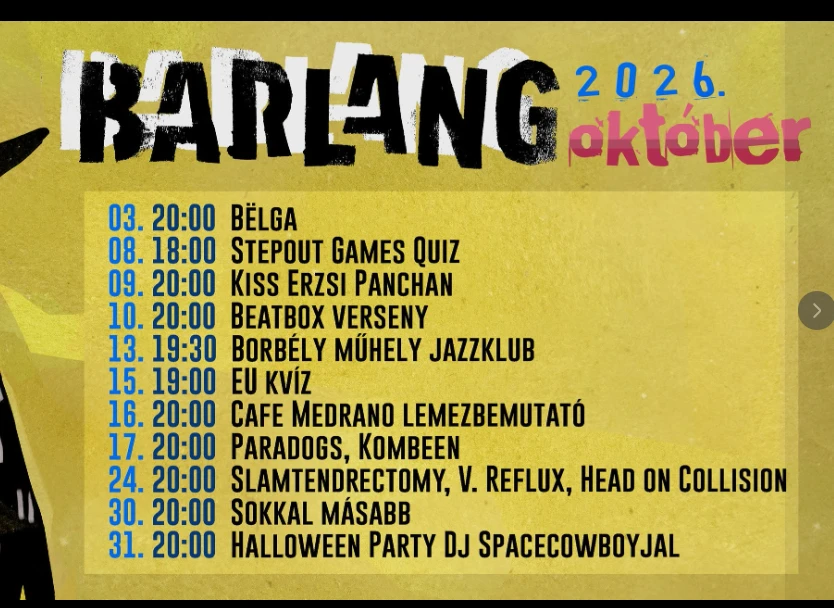
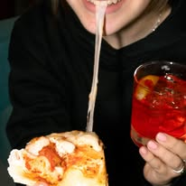

BARLANG
A Dunaparti Művelődési Ház udvara és pinceklubja · Szentendre
Heti menetrend
Program
2026. október

[IDE JÖN: a havi plakát]
Jegyek, belépő: [IDE JÖN: jegyárak / jegyvásárlás link]
Pince vagy Udvar

A pince
A pinceklub a koncertek és a bulik tere – jazztől a hardcore-ig.
- Ár-kategória: $ – megfizethető
- Belépő: [IDE JÖN: jegyárak]
- Befogadóképesség: [IDE JÖN: hány fő]

Az udvar
A Művelődési Ház udvara: beszélgetés, pizza, bor.
- Nyitvatartás: [IDE JÖN: nyitvatartás]
- Szezon: [IDE JÖN: mikor van nyitva az udvar]
- Ár-kategória: $ – megfizethető
Étel & ital


[IDE JÖN: fotó]
Van pizza. Van bor.
…és megfizethető: $
Étlap / itallap
Pizza
- Margherita1 900 Ft
- Sonkás2 300 Ft
- Szalámis-csípős2 400 Ft
- Négysajtos2 500 Ft
Inni
- Vörösbor / fehérbor (1 dl)500 Ft
- Fröccs (kisfröccs)450 Ft
- Csapolt sör (0,5 l)990 Ft
- Házi limonádé800 Ft
(Ez csak kitaláció – majd átírjuk a rendes étlapra és árakra.)
Galéria
vidd rá az egeret / koppints rá → színes lesz
- #01 színpad
- #02 udvar
- #03 bejárat
- [IDE JÖN: további fotók a koncertekről]
Gyere le!
Cím
2000 Szentendre,
Duna korzó 18.
Telefon (26) 312 657
E-mail barlang@szentendre.hu
Nyitvatartás [IDE JÖN: nyitvatartás]
Facebook · 9,6 ezer követő szentendreprogram.hu
86%
ajánlja
51 vélemény · Facebook